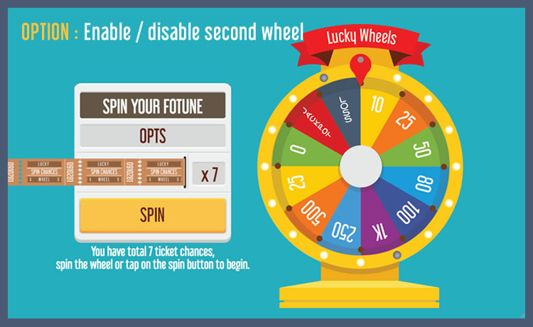

“Lucky Wheels” Documentation by “demonisblack” v2.8
“Lucky Wheels”
Created: 10/7/2017
By: demonisblack
Email: demonisblack@gmail.com
Thank you for purchasing my game. If you have any questions that are beyond the scope of this help file, please feel free to email via my user page contact form here. Thanks so much!
Table of Contents
- Introduction
- Getting Started
- HTML Structure
- CSS Files and Structure
- JavaScript
- Game Functions
- Game Assets
- Compatibility
- Add-ons
- Sources and Credits
- Changelog
- Support Policy
A) Introduction - top
Lucky Wheels is a HTML5 game where you spin the wheel to win the points, it come with 2 wheels where it give a second chance to bonus up the score or loss it all.
The ZIP package contains the game with 1280×768 resolution that scales to fit the whole screen device, but it may not be perfectly full screen.
How To Play:
1) Spin the wheel or tap on the spin button to play
2) You have total 7 ticket chances to get high score


B) Getting Started - top
To install the game just upload folder 'game' to your server. The game won't run locally with some browser like Chrome due to some security mode.
You need a website that runs PHP to make facebook share button work, and make sure to change Facebook Open Graph meta and Twitter meta in index.html, just replace [GAME_URL] to your game URL.
<!-- for Facebook -->
<meta property="og:image" content="[GAME_URL]/share.jpg" />
<meta property="og:url" content="[GAME_URL]" />
<!-- for Twitter -->
<meta name="twitter:image" content="[GAME_URL]/share.jpg" />
You can easily customize game text and settings in game.js file
var gameSettings = {
enableFixedResult:false, //option to have fixed result by API, enabling this will disable 2D physics engine
enablePercentage:true, //option to have result base on percentage, enabling this will disable 2D physics engine
spinDirection:true, //true to spin right, false to spin left
spinSpeed:30, //wheel spinning speed
touchSpin:true, //touch to spin (true/false)
gamePlayType:true, //game play type; true for game1, false for game2
gameChance:7, //total chances for game 1
gameBetPoint:500, //total bet point for game 2
gameCanBet:10, //total bet increase for game 2
gameMaxBet:1000, //max bet for game 2
firstWheelRadius:230, //first wheel radius for slot color feature
secondWheelRadius:100, //second wheel radius for slot color feature
defaultStatusBgColor:'#655643', //status bacgkround color
secondWheel:true //option to display second wheel; (true/false)
};
var textDisplay = {
statusText_arr:['SPIN YOUR FOTUNE','SPINNING...','[NUMBER]PTS', 'WIN [NUMBER]PTS', 'BETTER LUCK NEXT TIME!', 'JACKPOT [NUMBER]','YOU LOSS ALL POINTS'],
creditText:'[NUMBER]PTS',
chancesText:'x [NUMBER]',
instructionTxt1:'You have total 7 ticket chances,\nspin the wheel or tap on the spin button to begin.',
instructionTxt2:'First place your bets,\nspin the wheel or tap on the spin button to begin.',
resultTitleText:'GAME OVER',
resultScoreText:'[NUMBER]PTS',
exitMessage:'Are you sure\nyou want to quit?'
};
//wheel segments
var wheel_arr = [{src:'assets/item_wheel_01.png', highlight:'assets/item_wheel_01_h.png', color:'#FDCC09', regX:1, regY:223, point:10, type:0, percent:30,
slot:{
color:'#FDCC09',
highlightColor:'#FFE600',
stroke:5,
strokeColor:'#fff',
fontSize:45,
text:'10',
textY:140,
textColor:'#fff'
}
},
{src:'assets/item_wheel_02.png', highlight:'assets/item_wheel_02_h.png', color:'#F37621', regX:1, regY:223, point:25, type:0, percent:25},
{src:'assets/item_wheel_03.png', highlight:'assets/item_wheel_03_h.png', color:'#7DB544', regX:1, regY:223, point:50, type:0, percent:20},
{src:'assets/item_wheel_04.png', highlight:'assets/item_wheel_04_h.png', color:'#1A9DD8', regX:1, regY:223, point:80, type:0, percent:15},
{src:'assets/item_wheel_05.png', highlight:'assets/item_wheel_05_h.png', color:'#3F559A', regX:1, regY:223, point:100, type:0, percent:15},
{src:'assets/item_wheel_06.png', highlight:'assets/item_wheel_06_h.png', color:'#91328B', regX:1, regY:223, point:1000, type:0, percent:15},
{src:'assets/item_wheel_07.png', highlight:'assets/item_wheel_07_h.png', color:'#449BD4', regX:1, regY:223, point:250, type:0, percent:15},
{src:'assets/item_wheel_08.png', highlight:'assets/item_wheel_08_h.png', color:'#F37621', regX:1, regY:223, point:500, type:0, percent:15},
{src:'assets/item_wheel_09.png', highlight:'assets/item_wheel_09_h.png', color:'#FDCC09', regX:1, regY:223, point:25, type:0, percent:25},
{src:'assets/item_wheel_10.png', highlight:'assets/item_wheel_10_h.png', color:'#7DB544', regX:1, regY:223, point:0, type:0, percent:25},
{src:'assets/item_wheel_11.png', highlight:'assets/item_wheel_11_h.png', color:'#DA2027', regX:1, regY:223, point:1000000000, type:2, percent:5},
{src:'assets/item_wheel_12.png', highlight:'assets/item_wheel_12_h.png', color:'#475C70', regX:1, regY:223, point:0, type:1, percent:5},
];
//second wheel segments
var wheelSecond_arr = [{src:'', highlight:'', regX:0, regY:100, mutiply:1, percent:30, slot:{
color:'#53709D',
highlightColor:'#6386BF',
stroke:8,
strokeColor:'#fff',
fontSize:35,
text:'x1',
textY:60,
textColor:'#fff'
}},
{src:'assets/item_wheel_inner_03.png', highlight:'assets/item_wheel_inner_03_h.png', regX:0, regY:100, mutiply:2, percent:10},
{src:'assets/item_wheel_inner_01.png', highlight:'assets/item_wheel_inner_01_h.png', regX:0, regY:100, mutiply:1, percent:10},
{src:'assets/item_wheel_inner_04.png', highlight:'assets/item_wheel_inner_04_h.png', regX:0, regY:100, mutiply:0, percent:10},
{src:'assets/item_wheel_inner_02.png', highlight:'assets/item_wheel_inner_02_h.png', regX:0, regY:100, mutiply:2, percent:10},
{src:'assets/item_wheel_inner_05.png', highlight:'assets/item_wheel_inner_05_h.png', regX:0, regY:100, mutiply:1, percent:30}];
//Social share, [SCORE] will replace with game score
var shareEnable = true; //toggle share
var shareText = 'SHARE YOUR SCORE'; //social share message
var shareTitle = 'Highscore on Lucky Wheels Game is [SCORE]PTS.';//social share score title
var shareMessage = '[SCORE]PTS is mine new highscore on Lucky Wheels Game! Try it now!'; //social share score message
wheel_arr array place all the slots, below is the explanation of each most important wheel_arr array item:
- src - image path
- highlight - highlight image path
- color - slot color code
- regX - image position center x
- regY - image position center y
- point - total point
- type - slot type (0 = is normal, 1 = loss all point, 2 = jackpot)
- percent - winning percentage (1 - 100)
- slot - instead of image you can draw out slot shape and enter text using these options
- color - slot color
- highlightColor - slot highlight color
- stroke - stroke highlight number
- strokeColor - stroke highlight color
- fontSize - font size
- lineHeight - line height
- text - text display, use \n tag to display vertical text eg. W\nI\nN\n
- textY - text position y
- textColor - text color
wheelSecond_arr array place all the second wheel slots, below is the explanation of each most important wheelSecond_arr array item:
- src - image path
- highlight - highlight image path
- regX - image position center x
- regY - image position center y
- mutiply - point to multiply (only number)
- percent - winning percentage (1 - 100)
- slot - instead of image you can draw out slot shape and enter text using these options
- color - slot color
- highlightColor - slot highlight color
- stroke - stroke highlight number
- strokeColor - stroke highlight color
- lineHeight - line height
- text - text display, use \n tag to display vertical text eg. W\nI\nN\n
- textY - text position y
- textColor - text color
To set wheel spinning result:
1. First enable the option below in gameSettings in game.js
enableFixedResult:false, //option to have fixed result by API, enabling this will disable 2D physics engine
2. Call function getResult(wheelNum, wheelInnerNum) to set result, by default -1 is to randomize, or any index number from wheel_arr and wheelSecond_arr array, eg 0 to 11.*Note the function must call before startSpinWheel(true) function, which is the spin button event.
getResult(8,-1);
To set wheel spinning result base on percentage:
1. First enable the option below in gameSettings in game.js
enablePercentage:false, //option to have result base on percentage, enabling this will disable 2D physics engine
2. Set winning percentage on each slots in wheel_arr and wheelSecond_arr in game.js
- result percent range from 1 - 100
- 0 to disable
To change slot image to drawing shape and text display:
1. Add new slot attribute settings to draw the slot shape like below.
{
src:'',
highlight:'',
color:'#FDCC09',
regX:1,
regY:223,
point:10,
type:0,
percent:30,
slot:{
color:'',
highlightColor:'#CB6907',
stroke:5,
strokeColor:'#fff',
fontSize:45,
lineHeight:45,
text:'10',
textY:140,
textColor:'#fff'
}
},
2. You can change the drawing radius in gameSettings in game.js
//wheel radius
firstWheelRadius:230, //first wheel radius for slot color feature
secondWheelRadius:100, //second wheel radius for slot color feature
The sound can be easily disabled to avoid compatibility issues in sound.js file:
var enableDesktopSound = true; //sound for dekstop
var enableMobileSound = true; //sound for mobile and tablet
The mobile rotate instruction can be easily change in mobile.js file:
var rotateInstruction = true; //enable rotate instruction for mobile
var forPortrait=false; //for portrait only, set false for landscape mode
C) HTML Structure - top
The page start with the loader wrapper that covering the whole screen in the body. It shows loader progress when calls the function initPreload()
<!-- PERCENT LOADER START-->
<div id="mainLoader"><img src="assets/loader.png" /><br><span>0</span></div>
<!-- PERCENT LOADER END-->
This section is for browser not support page when calls the function checkBrowser(). It shows error message when detect the browser does not support canvas.
<!-- BROWSER NOT SUPPORT START-->
<div id="notSupportHolder">
<div class="notSupport">YOUR BROWSER ISN'T SUPPORTED.<br/>PLEASE UPDATE YOUR BROWSER IN ORDER TO RUN THE GAME</div>
</div>
<!-- BROWSER NOT SUPPORT END-->
Device rotate instruction page when calls the function checkMobileOrientation(). It shows rotate instruction when device is in portrait view.
<!-- ROTATE INSTRUCTION START-->
<div id="rotateHolder">
<div class="mobileRotate">
<div class="rotateImg"><img src="assets/rotate.png" /></div>
<div class="rotateDesc">ROTATE YOUR DEVICE <br/>TO LANDSCAPE</div>
</div>
</div>
<!-- ROTATE INSTRUCTION END-->
Follow by one canvas tag in the body. The game start initiatie by calls the main function of the game initMain().
<!-- CANVAS START-->
<div id="canvasHolder">
<canvas id="gameCanvas" width="1280" height="768"></canvas>
</div>
<!-- CANVAS END-->
D) CSS Files and Structure - top
I'm using two CSS files in this game. The first one is a generic reset file. Many browser interpret the default behavior of html elements differently. By using a general reset CSS file, we can work round this. This file also contains some general styling, such as anchor tag colors, font-sizes, etc. Keep in mind, that these values might be overridden somewhere else in the file.
The second file contains all of the specific stylings for the page.
E) JavaScript - top
This game using Javascript files below.
-
jQuery is a cross-platform JavaScript library designed to simplify the client-side scripting of HTML.
-
Detect Mobile Browser is a open source scripts to detect mobile browsers and phones.
-
CreateJs plugin is a suite of modular libraries and tools which work together to create interactive content on open web technologies via HTML5.
-
P2.js is 2D rigid body physics engine written in JavaScript. Includes collision detection, contacts, friction, restitution, motors, springs, advanced constraints and various shape types.
-
TweenMax is an extremely fast, lightweight, and flexible animation tool that serves as the foundation of the GreenSock Animation Platform (GSAP).
-
The game have the following js files
- init.js : check if browser or device support
- loader.js : loader to load all game images
- main.js : initiate game setup and browser resize function
- mobile.js : mobile orientation change
- canvas.js : canvas setup and resize
- sound.js : sound event
- game.js : game play and logics
- p2.js : physics setup and collision detect
- plugins.js : additonal useful plugins
- init.js : check if browser or device support
Complete game flow:
- The index.html file start init.js for browser detection
- If browser is supported, init loader.js to start load asserts with loading progress
- For mobile the rotate instruction shows when device is in portrait view, detect by mobile.js
- When all asserts contained in "/assets" folder are loaded, the game start construct canvas.js and main.js from game.js thats shows game menu
- If user click begin button in game menu, the game will start with game.js
- If user spin the wheel or click the spin button, the main and second wheel will start spining
- When both wheels is stopped and slots have point, user will score point
- If main wheel stop at loss slot, user will lose all point
- If user used all the tickets, the game will end
- If user click replay button at game result, it will restart game
F) Game Functions - top
The most important functions used for page.
-
checkBrowser()
This function is runs for browser detection
-
checkMobileEvent()
This function runs for mobile event
The most important functions used for game.
-
initMain()
This function build canvas
-
startGame()
This function start gameplay
-
stopGame()
This function stop gameplay
-
saveGame()
This function save game score
-
getResult(wheelNum, wheelInnerNum)
This function set result for wheel, default -1 for random slot
G) Game Assets - top
The game contain 'design' folder which include following:
- luckywheels_1280x768.psd - with layer folders below
- Option
- Result
- Game
- Landing
The folder 'assets' in 'game' folder contains all the images of the game that can be replaced. Is better to have the same size of the old ones if you want to reskin the game graphic without coding.
I) Compatibility - top
This game is build for Desktop browsers that support HTML5 canvas. Any mobile/tablet should work in landscape view, but they are not officially supported.
J) Add-ons - top
The add-ons is an additional feature added to the game, below are the add-ons that are compatible with this game:
IMPORTANT: This game is only compatible with ONE of the add-ons below.
This game is compatible with Scoreboard for HTML5 Games, it is a add-ons page where user can submit score and view top 10 leaderboard. You can get it here.
This game is compatible with Membership and Rewards System add-on, it is a add-ons page where user can singup, login and retrieve their game data, redeem rewards with the available game points. You can get it here.
K) Sources and Credits - top
I've used the following font and sound files as listed.
- Libel Suit from file Typodermic Fonts
- Pack of minimalist yellow buttons from file freepik
- major 7 slot machine.mp3 from file pierrecartoons1979
- 00530 bus ticket validate 1.wav from file Robinhood76
- sf3-sfx-menu-select.wav from file broumbroum
- alert3 from file RICHERlandTV
- Up Chime 2 from file foolBoyMedia
- 04412 coin automat - giving product sounds.wav from file Robinhood76
- Little Thing from file LloydEvans09
- Electro win sound from file Mativve
- Sorry_Synth from file V4cuum
- Electro success sound from file Mativve
L) Changelog - top
Version 2.8- Improve Membership and Rewards System add-on script
- Changed game settings
- Updated sound function
- Improve Membership and Rewards System add-on script
- Add-on script integrated
- Add-on script integrated
- Updated result percentage
- Fixed result on same percentage issue
- New arrow movement for none physics option
- Update Google to Whatsapp share
- Fixed result without physics engine
- Now can edit each slot value display, instead of image now it can enter value options to draw out segment shape
- Option to set result base on percentage
- Fixed inner wheel result
- Compatible with Membership and Rewards System add-on
- Fixed audio not playing in Chrome browser
- Option to set fixed result
- Fixed customize slots pin
- Fixed second wheel issue
M) Support Policy - top
Check out support policy here.
Wordpress Site
By using Scoreboard for HTML5 Games plugin, you can embed HTML5 game into WordPress post or page.
> Plugin
Help simulate ads on HTML5 Games, you can integrate and display static and takeover ads through different Ads Serving Platform.
> Documentation
Guide you through integrating Facebook Instant Games API in our HTML5 Games.
> Documentation
Once again, thank you so much for purchasing this game, if you have a more general question relating to the games on CodeCanyon, you might consider visiting the item page in the "Support" section.
How to rate an item on CodeCanyon?
Use the steps below to rate our items on CodeCanyon:- Login to CodeCanyon
- Open the menu on the top right, and click onto the link “Downloads” which shows a list of your downloads
- Rate our items using the stars
- That’s it. Thank you very much!
demonisblack